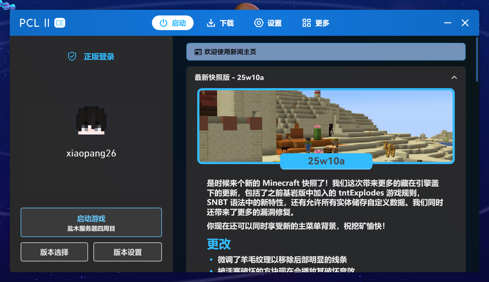
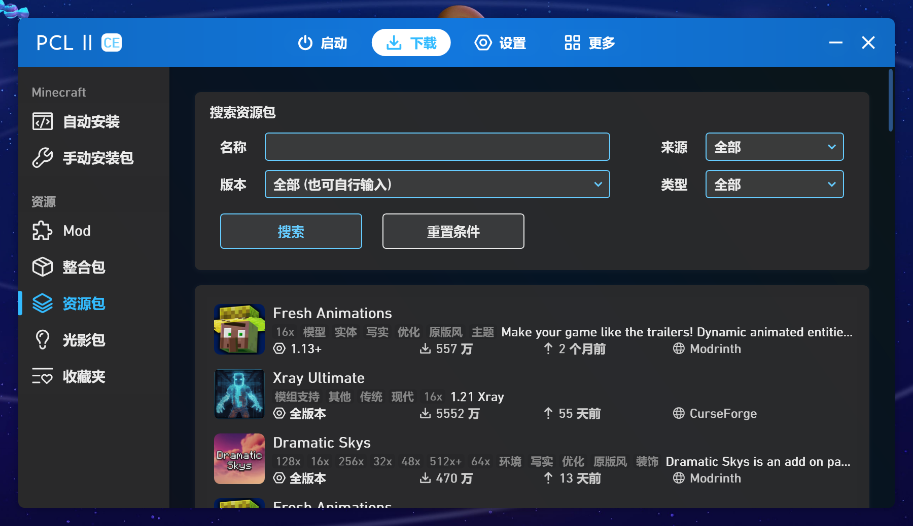
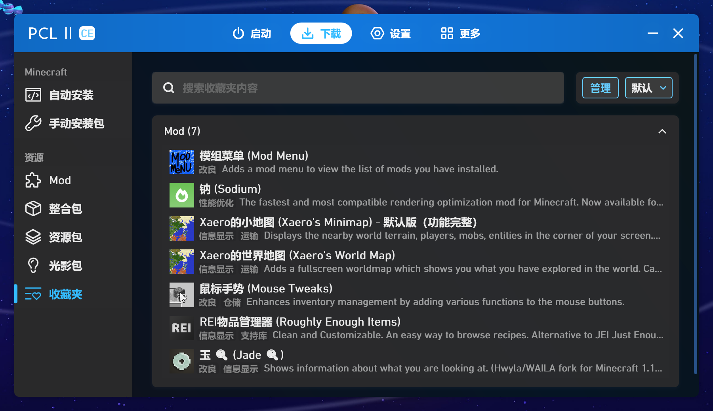

PCL2 社区版
首页
GitHub
PCL2 社区版
PCL2-CE ,基于 PCL2 开源代码二次开发的社区版本。
与PCL2主线一样基于WPF，包括了主线暂未制作的功能和改进！
PCL2 社区版 由社区强力驱动的抢先预览版。
有深色，浅色模式，加入了资源包、光影下载等。
而且支持Windows in ARM系统！
That is really Pro
下载地址
GitHub



🎮 特色功能
分享 Mod 给他人
多账号快速切换
在启动器内下载资源包和光影包
资源收藏夹功能
[正在开发] 联机功能